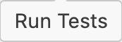

{kind=link}
{kind=link}
{kind=link}
{kind=link}
{kind=link}
{kind=link}
{kind=link}
{kind=link}
{kind=link}
pak::pak(c("usethis", "cli", "crayon",
"rlang", "roxygen2", "pkgload"))
I’ve been trying out Posit’s new Positron IDE for a few weeks, so I put together a post covering my initial impressions of developing Shiny apps and R packages.
Why switch?
I use RStudio daily for R development and have no complaints about the IDE’s capabilities. However, I’ve recently started using VS Code for Python and JavaScript. When I heard about Positron, I wondered if it would offer enough overlapping features to allow me to use a single IDE for all three languages.
Positron was covered at posit::conf(2024), and the Getting Started article on the new website lists reasons you might (or might not) want to switch IDEs. I’ve summarized them below:
Switch
Don’t switch
IDE Layout
At first glance, Positron looks like VS Code, but with the four panes we’re used to seeing in RStudio. The default layout includes a Welcome pane with options for opening files and folders above the Panel, which displays the current version of R running:
The Panel is similar to the Console in RStudio but also includes tabs for Terminal, Problems, Output, etc.
The Session and Variables2 panes are open and initially empty, but we can see this where our Plots will be displayed.
Layout options
To customize Positron’s panes, we can use the layout presets icon (in the upper-right corner of the IDE).
Or we can position each pane manually via View > Appearance > Panel Position …
We’ll continue using the default ‘Stacked Layout’ configuration in this post, but I recommend exploring the other options to find a customization that fits your needs.
R & Python versions
I had R (R 4.4.1) and Python (3.11.5) previously installed, and Positron quickly located both R and Python versions (and displays them in multiple places in the IDE):
For more information on detecting Python and R versions, see the Interpreter Selection section of the documentation.
R Dependencies
Positron’s documentation recommends installing the following packages:3
Files, Folders and Projects
I use the folder icon in the upper right corner of the IDE to locate and open project folders. Still, Positron has multiple options for opening project folders from the welcome page and with the explorer sidebar menu item:
{kind=link}
I’ll be using my sap repository because it contains the following:
- Version control
- An R project (i.e., with an
.Rprojfile)
- A Shiny app
- An R package4
Activity bar
One of Positron’s major distinguishing factors is its activity bar. This sidebar lets us open and edit files, perform searches, access source control (like Git), and find/install extensions.
{kind=link}
I’ll briefly cover a few of Positron’s sidebar menu items in the sections below.
Explorer
{kind=link}
This closely resembles the Files pane in RStudio.
{kind=link}
{kind=link}
Clicking on files in the Explorer will open them in the Editor. After opening files, the cursor location will also display additional information on hover (i.e., version control information):
{kind=link}
Search
{kind=link}
Similar to the Find in Files (Ctrl + Shift + F) window in RStudio.
{kind=link}
{kind=link}
Source Control
{kind=link}
When in a Git repo, it displays Git commits, branches, remotes, stashes, tags, work trees, and contributors (similar to the Git pane in RStudio).
{kind=link}
{kind=link}
In RStudio, I still use the Terminal for ~90% of my interactions with Git, but Positron also comes with a Source Control menu.5
{kind=link}
Extensions
{kind=link}
Positron’s extensions are somewhat similar to RStudio Addins but with a few key differences:
Positron extensions enhance the IDE’s capabilities by interacting with the VS Code API. They can range from language support (e.g., R, Python) to tools and features for general coding tasks (debugging, version control, syntax highlighting, code snippets, etc.)
RStudio Addins are custom tools and features to extend IDE’s functionality, focusing on R-specific tasks (package development, customizing visualizations, R markdown document generation, etc.)
{kind=link}
{kind=link}
At a minimum, be sure to install the Posit Publisher extension. I’ve also installed Positron +1e, a collection of extensions curated by Garrick Aden-Buie6 for ‘git-backed data science and dev work shared primarily on GitHub’.
Shiny Apps
I’ve checked out a branch of sap that’s in the early stages of development, so it’s a Shiny app (and not an R package yet).10 The image below highlights some of the IDE’s features after opening the app.R file:
{kind=link}
app.R file (click to enlarge)Positron displays the current folder (or project) in a familiar location, and the active Git branch and Quarto version are conveniently placed in the footer.
As we can see from the image above, Positron displays much of the same information as the RStudio IDE but with a VS Codeish layout. The most notable change I had to adapt to was the new location of the project files in the file Explorer.
Running Applications
Positron detects that I’m developing a Shiny application and places a Run Shiny App icon at the top of the app.R file. Clicking the Run Shiny App button launches our application in the Viewer pane.
{kind=link}
{kind=link}
Unlike RStudio, Positron runs Shiny applications from the Terminal with a dedicated Shiny process when the Run Shiny App button is clicked.
In the Terminal, a message tells us that autoreload has been turned on (which means we can make live updates to our application):
{kind=link}
We’re also told that the application runs with the ‘minified’ JavaScript file (shiny.min.js), which results in using --devmode. Both of these options are covered in the Shiny documentation.
Stopping Applications
We can stop the application like we would any other Terminal process:
Ctrl + C
After stopping the application, you can clear the Viewer by clicking on the Clear the current URL icon in the upper-right corner.
{kind=link}
These changes make application development much more seamless, and now the app.R file also includes icon for editing our Shiny UI with the shinyuieditor package (provided it’s installed).
{kind=link}
Package Development
Transitioning from developing R packages in RStudio to Positron has been pretty smooth. For example, I wanted to change the display_type() function to check if the application runs in RStudio before setting the shiny.launch.browser option.12
{kind=link}
Loading & Documenting
After making changes to R/display_type.R, I can use the same keyboard shortcuts from devtools to load and document the package:
Cmd / Ctrl + Shift + L = devtools::load_all()
Cmd / Ctrl + Shift + D = devtools::document()
Under the hood, Positron calls devtools::load_all() and devtools::document(), but instead of launching a Build pane, Positron displays the messages from in the Console:
{kind=link}
The display_type.Rd in the Console is a hyperlink we can use to preview our updated help file.
{kind=link}
Installing
Positron uses the same keyboard shortcut as RStudio for installing packages, but the underlying process differs slightly. Instead of calling devtools::install() in the Build pane, Positron launches the Terminal and runs pak::local_install(upgrade = FALSE):
Cmd / Ctrl + Shift + B = pak::local_install(upgrade = FALSE)
{kind=link}
*) and a message (click to enlarge){kind=link}
The Terminal pane displays a dedicated Install R package task when a package is installed.
local_install(upgrade = FALSE) updates the package with the minimum work needed, upgrading dependencies only if the package or one of its dependencies requires a higher version. It prefers binary packages to source packages, even if the binaries are older.
local_install() also seems to takes a bit longer to run than devtools::install(), but the end result is the same (i.e., the package is installed, the R session restarts, and the package is loaded with library() in the Console).
{kind=link}
Testing
Positron comes with a variety of options for testing code. We can use the standard keyboard shortcut to call devtools::test(). This will open a Terminal task with the test results:13
Cmd / Ctrl + Shift + T = devtools::test()
{kind=link}
devtools::test() (click to enlarge){kind=link}
{kind=link}
tests/testthat/ (click to enlarge)The testing sidebar menu also displays the contents of each test file. If you’re using testthat’s behavior-driven development functions (describe and it), the descriptions are organized hierarchically under TESTING:
{kind=link}
If test_that() is used, the function being tested is displayed each time an expect_* function is called:
{kind=link}
test_that() test descriptions (click to enlarge)Running tests
The  icon under the TESTING sidebar menu item can also be used to run all the tests in the testthat folder.
{kind=link}
Recap
Positron brings a refined experience for RStudio users, blending powerful tools in a streamlined layout that promotes an efficient workflow. Here’s a recap of the features we’ve explored:
IDE Layout: Positron’s design ensures smooth navigation. It focuses on customizable panels that allow developers to arrange code editors, data viewers, and debugging consoles based on their workflow.
Support for R & Python: The IDE accommodates multiple versions of R and Python, offering a consistent environment for both languages. Integrated version control helps manage and switch between environments seamlessly, making it ideal for teams working on cross-language projects.
Shiny App Development: Positron provides robust tools for developers to build, test, and deploy Shiny applications. The IDE simplifies UI-building with live previews and reactive programming support, enabling users to refine interactive components.
Package Development: Positron includes a comprehensive suite for R package development, with features that streamline code documentation, testing, and version management. These tools make it easier to follow best practices, ensuring well-organized, maintainable packages.
Positron can enhance productivity for R and Python users, making it a strong choice for data science and development.
Footnotes
I’m using version 2024.07.0-107↩︎
The Variables pane is similar to the Environments pane in RStudio.↩︎
These packages are described in the R prerequisites section.↩︎
sapis the Shiny app-package I used to demonstrate development in my Shiny-App-Packages book.↩︎I’m using a branch from
sap, which is a collection of Shiny apps/R packages.↩︎Read more on Garrick’s blog↩︎
The Open VXS Registry is manages by the Eclipse Foundation.↩︎
Read more on Andrew’s blog↩︎
Read more on Veerle’s blog↩︎
I’m demoing the
02.1_shiny-app, which is a boilerplate Shiny app project with the Old Faithful Geyser data.↩︎This is covered in the
08_launch-appbranch ofmoviesApp, which is covered in the Launch chapter of Shiny-App-Packages.↩︎I’m demonstrating with the
12.3_tests-snapshotsbranch ofsap, which is covered in the Test Tools chapter of Shiny-App-Packages.↩︎